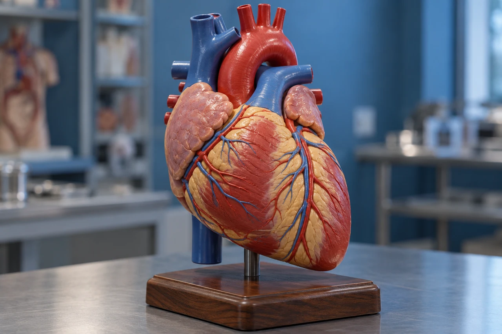

MEDLEX / SAPPHIRE
Cardiovascular system
 MedLexTHE LANGUAGE OF MEDICINE
MedLexTHE LANGUAGE OF MEDICINE Healthcare Crown Academy
Healthcare Crown AcademyMEDLEX / BATCH 02
Cardiovascular
system
Explore the vocabulary. Make the distinctions. Explain the meaning with confidence.

01 / EXPLORE & APPLY
One sentence. A whole clinical story.
Explore the detail panels, retrieve the meaning, then explain the distinction.
How much can you understand before learning a single diagnosis?
Predict first. Return to this sentence after the lesson.
SOURCESNHLBI / Blood flow
02 / EXPLORE & APPLY
Your learning route
Explore the detail panels, retrieve the meaning, then explain the distinction.
01 · Locate
Name chambers, valves, vessels and heart tissues.
02 · Decode
Separate roots, combining vowels, prefixes and suffixes.
03 · Distinguish
Explain common symptoms, disorders, tests and procedures.
04 · Apply
Translate a clinical note and justify terminology choices.
Success target: explain an unfamiliar term, then use it accurately in context.
SOURCESNHLBI / Blood flow
03 / EXPLORE & APPLY
Two pumps. One continuous circuit.
Explore the detail panels, retrieve the meaning, then explain the distinction.
Pulmonary circulation
Right ventricle → lungs → left atrium. Blood exchanges gases in the lungs.
Systemic circulation
Left ventricle → body tissues → right atrium. Blood supports tissue exchange.
Coronary circulation
Blood vessels supply the heart muscle itself. Blood inside a chamber does not directly nourish all of the myocardium.
Arteries carry blood away from the heart. Veins return blood toward it.
Source desk
[04] NIH • NHLBI ↗SOURCESNHLBI / Blood flow
04 / EXPLORE & APPLY
Meet the chambers
Explore the detail panels, retrieve the meaning, then explain the distinction.
NIH / NHLBI · Anatomy of the interior of the heart. Click to enlarge.
Right and left always refer to the patient’s sides. Atrium → atria; ventricle → ventricles.
Source desk
[03] NIH • NHLBI ↗SOURCESNHLBI / Blood flow
05 / EXPLORE & APPLY
Follow one drop of blood
Explore the detail panels, retrieve the meaning, then explain the distinction.
| Step | Blood pathway | Oxygen level (relative) |
|---|---|---|
| 1 | Body → venae cavae | Lower after tissue exchange |
| 2 | Right atrium | Lower after tissue exchange |
| 3 | Tricuspid → right ventricle | Lower after tissue exchange |
| 4 | Pulmonary valve → pulmonary arteries | Lower after tissue exchange |
| 5 | Lung capillaries | Higher after lung exchange |
| 6 | Pulmonary veins → left atrium | Higher after lung exchange |
| 7 | Mitral → left ventricle | Higher after lung exchange |
| 8 | Aortic valve → aorta → body | Higher after lung exchange |
Source desk
[04] NIH • NHLBI ↗SOURCESNHLBI / Blood flow
06 / EXPLORE & APPLY
Valves keep flow moving forward.
Explore the detail panels, retrieve the meaning, then explain the distinction.
Tricuspid
Right atrium → right ventricle.
Pulmonary
Right ventricle → pulmonary trunk.
Mitral / bicuspid
Left atrium → left ventricle.
SOURCESNHLBI / Blood flow
07 / EXPLORE & APPLY
The wall and its wrapper
Explore the detail panels, retrieve the meaning, then explain the distinction.
Epicardium
Outer layer of the heart wall; also the visceral layer of the serous pericardium.
Myocardium
The muscular layer that contracts.
Endocardium
The lining of chambers and valve surfaces.
Pericardium = the surrounding sac. Myocarditis = inflammation of heart muscle; pericarditis = inflammation of the pericardium.
SOURCESNHLBI / Blood flow
08 / EXPLORE & APPLY
Electricity sets the rhythm
Explore the detail panels, retrieve the meaning, then explain the distinction.
Sinoatrial (SA) node
The usual natural pacemaker starts the impulse.
Atrioventricular (AV) node
A short delay supports filling before ventricular activation.
Bundle branches + Purkinje fibres
The impulse spreads through the ventricles.
An ECG records electrical activity. It does not directly measure the strength of contraction.
SOURCESNHLBI / Blood flow
09 / EXPLORE & APPLY
Systole or diastole?
Explore the detail panels, retrieve the meaning, then explain the distinction.
Systole
Contraction phase. Ventricular systole includes blood ejection.
Diastole
Relaxation phase. Ventricles fill during diastole.
In a blood pressure reading, systolic is the upper number and diastolic is the lower number. Units: mmHg.
SOURCESNHLBI / Blood flow
10 / EXPLORE & APPLY
A medical word is a small construction.
Explore the detail panels, retrieve the meaning, then explain the distinction.
Pericarditis → inflammation of the pericardium
Start at the end
Identify the suffix, then the root and any prefix.
Read in context
A literal breakdown helps; the accepted clinical definition completes the meaning.
Notice the vowel
cardi/o is a combining form: root + combining vowel. Not every term has a prefix.
SOURCESNHLBI / Blood flow
11 / EXPLORE & APPLY
Your core root toolkit
Explore the detail panels, retrieve the meaning, then explain the distinction.
Use the whole term to choose the meaning: angi/o usually refers to a blood vessel in this lesson.
SOURCESNHLBI / Blood flow
12 / EXPLORE & APPLY
Small parts. Big changes in meaning.
Explore the detail panels, retrieve the meaning, then explain the distinction.
Prefixes
tachy- fast · brady- slow
hyper- above/excessive · hypo- below/deficient
endo- within · peri- around
Suffixes
-itis inflammation · -megaly enlargement
-pathy disease · -stenosis narrowing
-plasty surgical repair · -ectomy excision
Combining vowels are often omitted before a vowel-starting suffix: phleb/o + -itis → phlebitis. Retain o in cardi/o + -megaly → cardiomegaly.
SOURCESNHLBI / Blood flow
13 / EXPLORE & APPLY
Build a term
Explore the detail panels, retrieve the meaning, then explain the distinction.
SOURCESNHLBI / Blood flow
14 / EXPLORE & APPLY
Disease words: read beyond the suffix.
Explore the detail panels, retrieve the meaning, then explain the distinction.
Inflammation is not synonymous with infection. A word ending in -itis does not identify its cause.
SOURCESNHLBI / Blood flow
15 / EXPLORE & APPLY
Rate ≠ rhythm ≠ sensation
Explore the detail panels, retrieve the meaning, then explain the distinction.
Atrial fibrillation (AF): disorganised atrial electrical activity with an irregular ventricular rhythm in typical cases.
Source desk
[06] NLM • MedlinePlus ↗SOURCESNHLBI / Blood flow
16 / EXPLORE & APPLY
Plaque, clot & embolism.
Explore the detail panels, retrieve the meaning, then explain the distinction.
SCHEMATIC · PLAQUE IN WALL / CLOT IN LUMEN
An embolus may be a detached clot, but other materials can embolise. DVT = deep vein thrombosis; PE = pulmonary embolism.
View NIH artery comparison ↗
SOURCESNHLBI / Blood flow
17 / EXPLORE & APPLY
Three terms that must stay distinct.
Explore the detail panels, retrieve the meaning, then explain the distinction.
Ischaemia / ischemia
Blood supply is inadequate for tissue needs. Injury can be reversible.
Angina pectoris
Chest discomfort due to myocardial ischaemia. Angina is a clinical syndrome.
Infarction
Tissue death caused by prolonged inadequate blood supply. Myocardial infarction (MI) affects heart muscle.
Ischaemia can progress to infarction. Ischaemia alone does not establish that tissue has died.
SOURCESNHLBI / Blood flow
18 / EXPLORE & APPLY
Heart attack, arrest and failure.
Explore the detail panels, retrieve the meaning, then explain the distinction.
Heart attack / MI
Acute injury with heart-muscle death due to ischaemia. The heart often continues beating.
Cardiac arrest
Abrupt loss of effective heart pumping. The person becomes unresponsive and is not breathing normally.
Heart failure
The heart cannot fill or pump well enough to meet the body’s needs. It can be acute or chronic.
These conditions can overlap. Recognising suspected arrest calls for immediate emergency response, CPR and an AED according to local training.
SOURCESNHLBI / Blood flow
19 / EXPLORE & APPLY
Translate the symptoms
Explore the detail panels, retrieve the meaning, then explain the distinction.
Symptoms and signs guide assessment; none of these terms alone confirms a cardiovascular diagnosis.
SOURCESNHLBI / Blood flow
20 / EXPLORE & APPLY
Which test answers which question?
Explore the detail panels, retrieve the meaning, then explain the distinction.
Electrocardiogram · ECG / EKG
A recording of cardiac electrical activity.
Echocardiogram · echo
Ultrasound images of heart structure and function.
Angiography
Imaging of blood vessels; the method may use catheter-based X-ray, CT or MRI.
Cardiac troponin · cTn
A blood biomarker of myocardial injury. A rise alone does not prove MI.
-gram = record; -graphy = recording/imaging process. ECG and echo are different investigations.
SOURCESNHLBI / Blood flow
21 / EXPLORE & APPLY
Procedure names tell a story.
Explore the detail panels, retrieve the meaning, then explain the distinction.
Pacemaker: delivers impulses to support heart rhythm. It does not perform the same role as a coronary stent.
SOURCESNHLBI / Blood flow
22 / EXPLORE & APPLY
Read abbreviations with care.
Explore the detail panels, retrieve the meaning, then explain the distinction.
Expand a term on first use. Abbreviations vary by setting; confirm ambiguous shorthand rather than guessing.
SOURCESNHLBI / Blood flow
23 / EXPLORE & APPLY
Case 1: decode the request.
Explore the detail panels, retrieve the meaning, then explain the distinction.
Say what the note establishes, and what remains uncertain.
SOURCESNHLBI / Blood flow
24 / EXPLORE & APPLY
Case 2: follow the clot.
Explore the detail panels, retrieve the meaning, then explain the distinction.
Explain why a pulmonary artery can contain relatively oxygen-poor blood.
SOURCESNHLBI / Blood flow
25 / EXPLORE & APPLY
Retrieval sprint
Explore the detail panels, retrieve the meaning, then explain the distinction.
SOURCESNHLBI / Blood flow
26 / EXPLORE & APPLY
The sentence is yours now.
Explore the detail panels, retrieve the meaning, then explain the distinction.
Exit ticket: build one term, distinguish two similar terms, and translate one clinical sentence.
SOURCESNHLBI / Blood flow
27 / EXPLORE & APPLY
Keep the language alive
Explore the detail panels, retrieve the meaning, then explain the distinction.
Today · 3 minutes
Close the slides. Draw the blood-flow route and label all four valves.
Tomorrow · 5 minutes
Recall six word parts without looking. Check and correct them.
In one week · 5 minutes
Translate a fresh note. Explain how each test differs from a diagnosis.
Core habit: decode → define → locate → apply → check context.
SOURCESNHLBI / Blood flow
28 / EXPLORE & APPLY
References & further reading
Explore the detail panels, retrieve the meaning, then explain the distinction.
Appendix A: Word Parts and What They Mean
Anatomy and embedded heart illustration; page updated 24 March 2022.
Rate and rhythm vocabulary; page updated 19 June 2025.
Plaque and vascular terminology; page updated 28 October 2024.
Sources checked 19 October 2026. Established anatomy and terminology may come from older, still-current pages. This lesson teaches terminology rather than clinical management.
Source desk
[01] NLM • MedlinePlus Understanding Medical Words Word-building method. ↗[02] NLM • MedlinePlus Appendix A: Word Parts and What They Mean Roots, prefixes and suffixes. ↗[03] NIH • NHLBI What the Heart Looks Like Anatomy and embedded heart illustration; page updated 24 March 2022. ↗[04] NIH • NHLBI How Blood Flows through the Heart Chambers, valves and circulation. ↗[05] NIH • NHLBI How the Heart Beats Conduction and the cardiac cycle. ↗[06] NLM • MedlinePlus Arrhythmia Rate and rhythm vocabulary; page updated 19 June 2025. ↗[07] NIH • NHLBI Atherosclerosis Plaque and vascular terminology; page updated 28 October 2024. ↗[08] AHA • CPR & First Aid Cardiac Arrest vs. Heart Attack Distinguishing two emergencies. ↗[09] NIH • NHLBI What Is Heart Failure? Pumping and filling dysfunction. ↗SOURCESNHLBI / Blood flow
29 / EXPLORE & APPLY
References & further reading
Explore the detail panels, retrieve the meaning, then explain the distinction.
Myocardial injury and clinical interpretation.
Myocardial infarction, PCI and bypass terminology.
Clot movement and pulmonary obstruction.
Cardiovascular word roots and meaning.
Visceral pericardium and epicardium.
Sources checked 19 October 2026. Established anatomy and terminology may come from older, still-current pages. This lesson teaches terminology rather than clinical management.
Source desk
[10] NIH • NHLBI Heart Tests Tests, imaging and catheterisation. ↗[11] NLM • MedlinePlus Troponin Test Myocardial injury and clinical interpretation. ↗[12] NLM • MedlinePlus Heart attack Myocardial infarction, PCI and bypass terminology. ↗[13] ACR / RSNA • RadiologyInfo Pulmonary Embolism Clot movement and pulmonary obstruction. ↗[14] NLM • MedlinePlus Word Roots — Part 1 Cardiovascular word roots and meaning. ↗[15] NLM • MeSH Pericardium Visceral pericardium and epicardium. ↗[16] NLM • MedlinePlus Fainting Syncope; reviewed 19 May 2025. ↗[17] NLM • MedlinePlus Foot, leg, and ankle swelling Oedema / edema. ↗[18] NLM • MedlinePlus Pulmonary edema Orthopnoea / orthopnea. ↗Course images are newly generated raster teaching artwork. Conceptual models are not patient images or diagnostic illustrations. Adapted OpenStax content is attributed under CC BY 4.0. Original source links are retained in the source desk.
SOURCESNHLBI / Blood flow